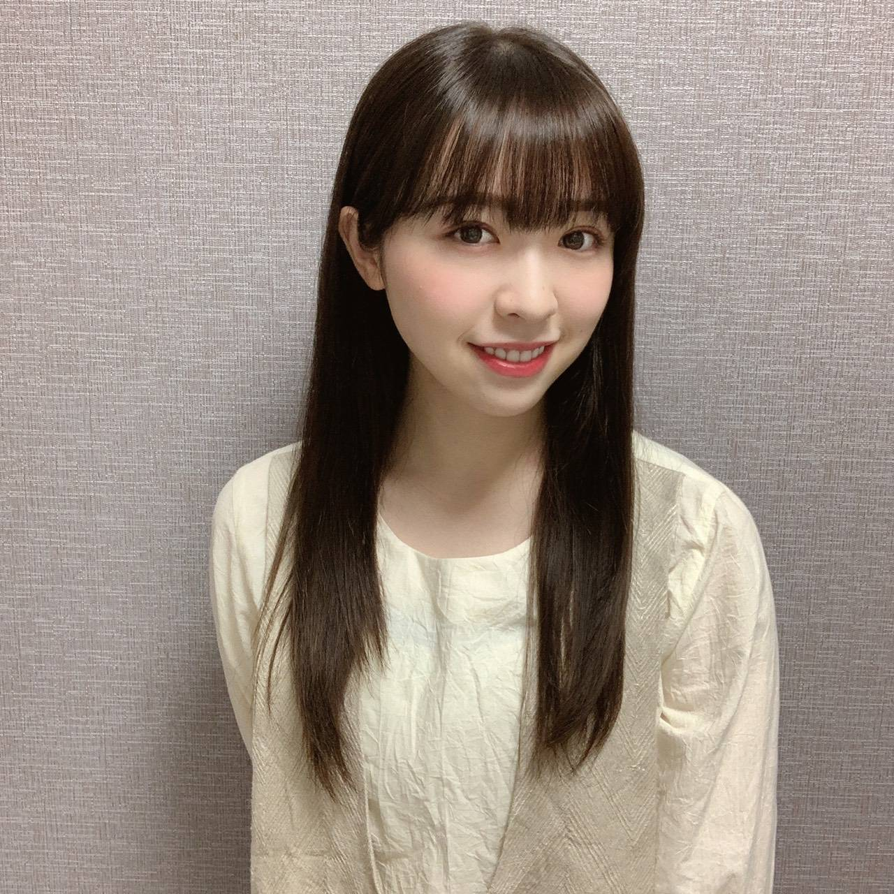

2020/1101Sun21の記憶
花奈さん、白石さん
ご卒業おめでとうございます。
そして本当にお疲れ様でした！

2018年の握手会

2017年の夏、懐かしい、笑
お二人は私にとって大切なお姉ちゃん
8年間共に乃木坂46として歩めたことを
とても誇りに思います。
ああ、大好きー、寂しいーー。
色々な思い出があるけど秘めておきたい。
私の心の中に大切にしまっておきます
大好きで尊敬するお姉ちゃん達、
本当にお疲れ様でした。

そして、今日で21歳になりました！
まちこちゃんに(ひなちまの事ね)
「みり愛って今19歳だっけ？」
って言われるくらいに
メンバーやファンの方からしたら
21歳は驚かれる年齢となりました、笑
13歳で乃木坂46に入り、
そして今8年目に突入しています。
いつも変わらず応援して下さる皆様
ありがとうございます。
私ってたぶん乃木坂の中で1番
普通の子、何も特徴がないし
これといった趣味もない
だからと言って不得意な事もない
アイドルらしいとは言い難い女の子。
それなのにファンの皆様は
いつだって私を見てくれています
沢山の期待を持ってくれています
私を乃木坂46として、ステージで
きらきら輝けるように支えてくださっています
本当に嬉しいんです、ありがとう。
そして乃木坂46が本当に大好き！
21歳も少しでも皆様の期待に
応えられるよう努力は変えず
頑張って参ります！

そんな本日は
オンラインミート&グリートでした！
誕生日の日に皆さんとお話が出来て
私はとても嬉しいです
私に見せるために
わざわざケーキを買ってきてくれたり
部屋に飾り付けをしてくれたり
仮装して笑わせてくれたり
用意したお手紙を読んでくれたり
「みり愛のファンは本当に楽しそうで
面白いね」とマネージャーさんに
言われるほど。笑
私は改めて幸せ者だなあと感じました。
皆さんは私に力を貰ってるよ！と
言って下さるけれど
それは私も同じです！凄くジーンと
心にくる新しい生誕祭のような感じでした。
本当に本当にありがとう。

みり愛
コメント(898)
みり愛らしくみり愛のやりたいようにアイドルファイト！！
どんな時でもどんなことでも絶対応援するし、支える！！
みり愛はすっごく話しやすくて、めっちゃ努力家で真面目で、
ノリめっちゃいいし、めっちゃ可愛くて綺麗だし、いいところ上げたらキリがないくらいある！
これからもずっと宜しく！大好きだよー
例え乃木坂の中では普通だとしても、僕の中では特別です！
握手会がミーグリになっちゃったけど、ミーグリも本当に楽しい！
いつまでも元気で頑張ってください！応援します！
誕生日にお話しできて嬉しかった！
実を言うと昨年、一昨年自分の誕生日の日に握手会があって、どっちもみり愛ちゃんのとこに行かせていただいてお祝いしてもらってたから、少しでもそのお返しになってたらいいな〜
20歳の年が、握手会とかイベントが全然無くて寂しかったって言っててそれ聞いて僕も寂しくなった。やっぱり握手会で直接みり愛ちゃんとお話しするのがほんとに楽しかったから、今年はきつかった。
大きな思い出、イベントは成人式、バスラ、46時間、ということで、今年の数少ない大きなイベントだったもんね。
バスラ4日間行けてよかったなぁ、って改めて思う。
って伝えようとしたら途中で切れちゃったのが申し訳ない。。
オンラインって難しいね〜
先輩が卒業するにつれて寂しくなるとは思うけど、みり愛ちゃんがその分大きくなると勝手に思ってます笑
21歳のみり愛ちゃんも全力で応援するね！
直接お祝いできなくて悲しいよ〜(*꒦ິ³꒦ີ)
直筆サイン入り生写真当たったからそれを早く見せたい！
早くみり愛ちゃんに会えますように！
私12月が誕生日だから、1ヶ月くらい同じ歳だよ！笑
みり愛はダンスも上手だし、お姉さんになったり妹になったりいろんな表情見せてくれるし、何より、かわいいし！
私の中では1番のアイドルだよ！
ライブ中のみり愛が1番好き！！
3列目でも2列目でも1列目でも私は、みり愛に目がいくよ！
これからもずっと応援するね！
みり愛の21歳が幸せで楽しい1年になりますように！
みり愛に出会えてよかったよ！！
残念ながら今日のミーグリは振替があっという間に上限いってて参加できなかったけど、別日程で参加できるので、その時改めてお祝いさせてください！
これから先も、みり愛ちゃんと、乃木坂ちゃんを応援し続けて、見守り続けるので、キラキラした姿を見せてください！
これからの1年も良い1年でありますように！
今年は直接お祝いできなくて残念だけど、次会った時何ヶ月遅れかわからないけどおめでとうを言いに行きますね笑
21歳のみり愛ちゃんにもついていきます。
これからもよろしくね(^o^)
ミーグリもありがとうございました！
お久しぶりでとても緊張しましたが、｢おめでとう｣と伝えれてよかったです！
21歳もいい1年にしてください！これからも応援しております！
最近のみり愛ちゃんは本当に大人っぽくなってステキだな〜って思います！
いつも全力なみり愛ちゃんをこれからも応援します、大好きです！
僕はみり愛ちゃんの素敵過ぎる笑顔に何度も何度も元気をもらってるし救われてるよ。今年は直接会えてないけどそれでもモバメとかで元気もらってるし本当にありがとうの気持ちでいっぱいという気持ち！（笑）みり愛ちゃんは本当にファン想いだと思うしそんなところが本当に大好きだよー！
今日もミーグリお疲れ様でした！今日は振替えられなかったけど色んな人にお祝いしてもらえてよかったね(^・^)また今度よろしくね〜
また会える日までお互い元気でいましょう！
これからも応援してます！
てるより
おめでとー！！
21歳になって
20時間46分たった感想は？
これからもずっと応援してます！
21際のお誕生日、おめでとう！！
努力を怠らず、いつも新しい可能性を感じさせてくれて、応援していて本当に楽しいです！
ファン想いなみり愛ちゃんですが、遠慮せずに自分の夢も叶えていってください！
これからもよろしくお願いします！
21歳のみり愛ちゃんの活動も楽しみにしてます！！
来週はミーグリで直接お祝いしますね！
よろしくお願いします！
みり愛さんは魅力溢れる素敵な人だよ。
かわいいし、声が素敵だし、ダンスがすごいし、考え方が立派だし…
語るには文字数が足りない(笑)！
そんなみり愛さんを推している人はみんな、みり愛さんから喜びを貰っている。
みんな、幸せです。
こちらこそ、ありがとう！
みり愛さんの喜びは、僕たちファンの喜び。
みり愛さんの夢は、僕たちファンの夢。
これからもずっと応援し続けます。
みり愛さんは最高だ！
今日は、みり愛の誕生日だね(^-^)v
お誕生日おめでとう☺可愛く産まれて来てありがとうね(*^^*)
これからも宜しくね(*^^*)いい１年になりますように☺
俺は、みり愛の事ずっと長野県で見ているし応援しているよ❤
みり愛は、アイドルらしいよ(^o^)大丈夫だから頑張ってね(^_^)v
寒くなって来てるから体調に気を付けて頑張ってね(*^^*)
ずっと愛してる❤可愛いよ(*^_^*)❤
今日のブログ、とても素敵です。みり愛が大人になってるのを実感してるよ。自分はそんなみり愛のことがほんとに大好きなんだよ。みり愛は本当に自慢の推しです。これからもずっと応援するから安心してね。
今日のミーグリには参加できなかったけど、追加日程で参加する予定なので、その時に改めてお祝いさせてね。
この1年もみり愛と一緒にがんばっていくので、これからもよろしくね。心からみり愛のことを愛してます。
誕生日おめでとう
誕生日おめでとうございます
今年もおめでとうが言えることがうれしいです。
自分も6日に誕生日迎えます
過去の誕生日月ブログで、ハンネ記載してもらったのが懐かしいですね。
今日のミーグリ参加できなくて残念でした。
今月中にミーグリ参加しておめでとうを言うのと同時に
、しばらくパワー頂いていないのでパワーもらいにも行きます
今年一年、今できる最善で楽しんでくださいね
ミーグリでも伝えたけどお誕生日おめでとう
今のみり愛ちゃんは21って言われても問題ないぐらい大人だよ！
みり愛ちゃんが思う以上にあなたはアイドルです。
お互い力を貰いながら頑張ろう！！
21歳も幸あれ！
いつも頑張り屋なみりあちゃんをずっと応援しています
これからも体調には気をつけて、みりあちゃんらしく過ごしてください！
かわいいかわいいみりあちゃん！だいすき！！！！
みりあちゃんが幸せな毎日を送れますように！！！！
本当に時が経つのは早いよねぇ〜
この1年も素敵な時間になりますように！
先輩達が卒業して寂しいけど、頑張って盛り上げていこう！
応援しているからね(^o^)
みり愛ちゃんにとって最高の１年になりますように！！
誕生日おめでとう！
どんどん、素敵な人になっていきますね？
やりたい事は、リクエストだよ～！
21歳も新しい事、頑張ろ(^_^)ﾉ
もう21なんだ……今日で20だと思ってた！
ミーグリ参加したかったけど仕事があって参加できなかったです(´；ω；｀)
お話したいなぁ…いつになるやら……
今年もみり愛ちゃんにとって良い年になりますように……！
これからも応援してます！！
お誕生日おめでとう！
21歳楽しんでね！
またね！
今日は短めに手紙読んだけど、今からしっかり書き直してみり愛ちゃんの元に届けるね。ぎこちない文章と読み方だったけど、しっかり聞いてくれて凄い嬉しかったよ。ありがとう
本当は部屋の装飾もやりたかったんだけど、パンケーキの装飾で精一杯だった笑あれちゃんとしたやつ使わないと結構難しいんだよー？MIRIAの文字も最初は書けてたんだけどだんだん溶けていって潰れちゃった笑
みり愛のファンは本当に楽しそうで面白いって、うんまさにその通りだね笑 自分も楽しかったし皆さんも本当に楽しんでたよ笑
一部屋に集まって飾り付けしてる方々や終わった後にみり愛ちゃんを語る飲み会やってる方々も居て羨ましいな〜楽しそうだな〜って思ってた笑
長くなったけど、今日はありがとう。本当にありがとう。また新たな1年間もよろしくお願いします。来年は会えたらいいね。では！
でみ
(・へ・)ノ
21歳おめでとう！！
乃木坂に加入してくれてありがとう
推させてくれてありがとう
日程が合わなくてオンライントークできてないのがとても辛いです…笑
いつか必ずお祝いしに行きます！
出会えたことに感謝です！
これからもみりあちゃんらしく無理せず頑張ってください！
当日に直接言えなくてごめんね
みり愛の無邪気に笑う姿やかっこよくダンスを踊る姿にいつも元気や癒しを貰ってます！
これからも応援し続けるし、自慢の推しメンです！！
そしてミーグリでの楽しい時間をありがとう
久しぶりに話せて楽しかったし、幸せな時間でした！！
今年もみり愛にとって楽しい1年になりますように
お誕生日おめでとう
22歳か？でもやっぱり私達の中で、みり愛たんはずーーっと妹だよ(*´ω｀*)
花奈とまいやんのこと、今後も沢山に連絡取って仲良くしてね＼(^o^)／
ミーグリお疲れさまでした
これからも頑張って(/･ω･)/
ちなみに、私はみり愛のこのポニーテール凄く好きだよ(*´ω｀*)
のぎのの楽しみ
握手会でも優しくしてくれてありがとう
みり愛ちゃんのダンスが大好き
乃木坂の最初は、みんな普通の美少女だけでした。
もちろん、みり愛も、、けど、今はドームでは箱が小さいと思わせる程のビッグネームです。
あなたを初めてLIVEで見た時、なんて可愛いし表情豊かなアーティスト！だと思いました、鳴門のアンダーLIVEではホンの5メートルくらいでみり愛をじーっと見てました。それは目を離せないと言う才能です。
私はまだ中学生なのでお金がなくて、ケーキとかミート&グリーととか形として祝えなくてごめんね みり愛ちゃんを推し初めて12月で5年が経ちます！推してて1秒も後悔とかないし推し変しようとも思ったことがない！！すごく大切な存在です
いっぱい書きたいことがあるけどキリが無くなるのでここら辺で
顔とかスタイルとか歌もダンスも良くないけど、今は夢が見つかりそうにないので乃木坂46に入ってみり愛ちゃんとツーショットを撮ってお話しするのを夢に見たりしてます（サインも貰いたい！w）全握とかライブとかでまたみり愛ちゃんに会う日を楽しみに待ってます。！
私にとっても素敵な1日だったので、一度きりの21歳を楽しんでね❕
ずっとずっと大好き
今年1年、素敵な1年になりますように。
いつまでも応援しております‼︎
昨年は直接お祝いを言うことができましたが、
今回は諸事情によりトーク会に参加が叶わず
お祝いの言葉を直接言えなかったのが残念です。
いつか都合がついたら、また握手会のときの
ようき色々撮った写真を用意してトーク会に
参加したいなと思います。
充実した21歳の年になりますように！
みり愛ちゃんの笑顔だったり美しいダンスだったり、今日のミーグリでもそうだけどいっつもふざけた感じのノリに付き合ってくれたり、いい意味でぜーんぜん緊張せんようなところがとても好きですよ。SNSとかみてもみんなの思い、気持ちが書かいててそれが多くて、祝われてて、やっぱりみり愛ちゃんは愛されてるなぁって思いました。ミリオンラブ軽く越してるよ。
今は直接は会えんしミーグリだけど、またイベントに行けるようになってからたくさんまたふざけましょう笑
あ、あのモンブランはとても美味しかったよ笑笑
最後に、生まれてきてくれてありがとう。
あなたは沢山の人の希望であり、癒しであり、大切な人です。
これからも宜しくお願いします。
もちろん私にとってもです。
スネイプより。笑笑
みり愛は妹キャラだったから、サイコーのお姉ちゃんだったね！！
卒業ホントに寂しいけど、これからもっと大きいグループできるように頑張ろうね！！
誕生日おめでとう
俺は10月17日にお祝いしたから、俺が1番ですよね？w
これからもずっと応援してるからね！！
これからもよろしくね！！
みり愛ちゃんにはね、たくさん元気をもらってるよ。
天性の、笑顔。
たゆまぬ努力の結果生み出される、ダンス。
ステージ上での、ストイックなまでのプロの顔。
かと思えば、ステージにいないときの、等身大の女の子の顔。
好きです。
来週、11月8日に、ミーグリいくね。
初めまして、になります。
ずっと会いたかった。
を伝えます。
2期生、大好きです。
またコメントしますね。
ひでき
そしてお誕生日おめでとう！！
お誕生日当日にミーグリができるなんてほんとにありがたいなって思いました。ミーグリが始まって、今回で4回目だったけど、ここ4週間くらいほんとに楽しくて、みり愛ちゃんとお話できてほんとに幸せだなと思ったよ。
まいやんとかなちゃん。ほんとにグループを支えてくれた大切な先輩の卒業はとても寂しいね。でも、最後パフォーマンスしている姿はこの目に焼きつけられたなと思うよ。
自分からするとみり愛ちゃんは他の誰とも違うなにか特別なものを感じます。言葉で表現するのは難しいけど、みり愛ちゃんは決してただ普通な子なんかじゃない。多くの人を幸せにできる十分素敵な力を持ってます。きっとこれからもこれまで以上に輝き続けてくれると思う！
今日のミーグリも本当にありがとう！みり愛ちゃんとお話できてる時間が今いちばんの幸せだよ。いつもありがとうみり愛ちゃん！
21歳も素敵な1年になる事を祈ってるね！！
21歳お誕生日おめでとう✿


すっかりお姉さんになったなぁ。
これからますます素敵な女性になっていくんだろうね。
またいつか安心して素敵な笑顔とパフォーマンスを直に見られる日が来ることを祈ってる。